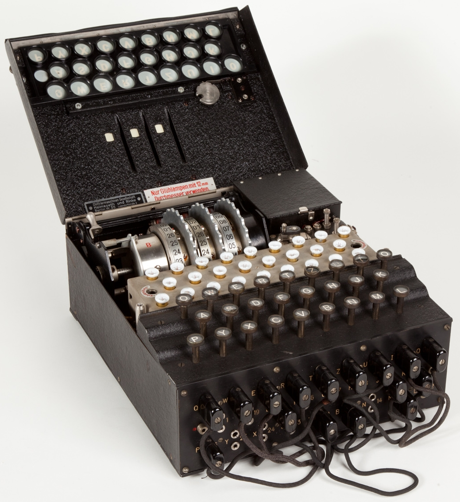

Turing's Achievements
-  Cracking the Enigma Code
-
 Inventing the Turing Test
Inventing the Turing Test
- Conceptualizing the Universal Machine
-
 Pioneering Artificial Intelligence
Pioneering Artificial Intelligence
Alan Turing was a pioneering computer scientist and mathematician whose work laid the foundations for modern computing. His contributions during World War II helped crack the German Enigma code and shortened the war by several years.
Inventing the Turing Test
Pioneering Artificial Intelligence
“The machine... has no pretensions whatever to originate anything. It can do whatever we know how to order it to perform. It can follow analysis, but it has no power of anticipating any analytical relations or truths. Its province is to assist us in making available what we are already aware of.”
- Alan TuringExplore his life, achievements, and legacy.